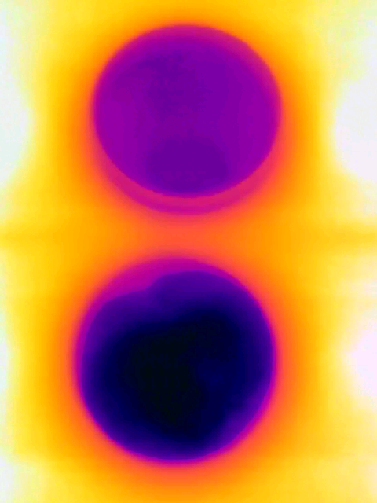

Thermographer: Charles Xie
Adding salt to ice causes it to melt and the temperature to drop significantly. This effect, known as freezing point lowering, is used to melt ice on roads in the winter.
Tap to download the video.